Poverty and Income Inequality in Scotland 2016-19
A National Statistics publication for Scotland
Published on 26 March 2020
This publication presents three-year averaged estimates of the percentage of people, children, working-age adults and pensioners in Scotland living in poverty, and other statistics on household income and income inequality. These estimates are used to monitor progress in reducing poverty, child poverty and income inequality.
Key trends
- Poverty may have stopped rising, although further years are required to confirm this.
- Income inequality continues to fluctuate.
- Median household incomes continue to rise.
Relative poverty: Poverty rate no longer rising
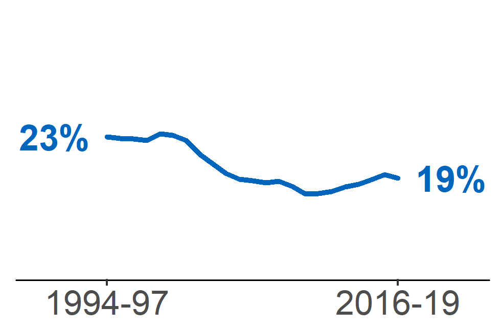
19% of people were living in relative poverty after housing costs in 2016-19. Overall, the poverty rate appears to have stopped rising.
Income inequality: Palma inequality measure fluctuating

The Palma coefficient measures income inequality. The top 10% of the population had 24% more income in 2016-19 than the bottom 40% combined.
Household income: Overall household incomes rising
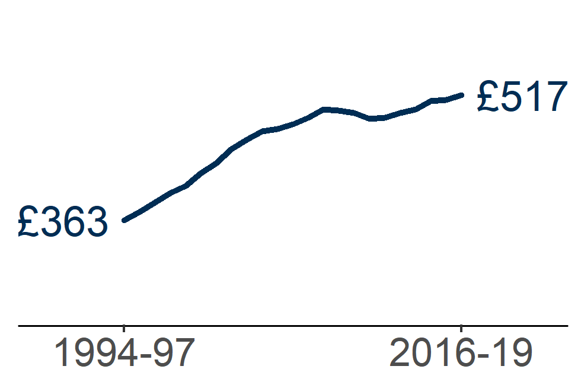
Median income before housing costs in Scotland in 2016-19 was £517 a week, continuing the rising trend.
What you need to know
Statistics in this report are based on data from the Family Resources Survey. This survey has been the main source of information on household income and poverty in Scotland since 1994/95.
Income and poverty measures
The Scottish Government uses a range of indicators to measure different aspects of poverty. The most commonly used poverty indicator in Scotland is relative poverty after housing costs. It is complemented in this publication by measures of absolute poverty and material deprivation.
Unless otherwise stated, these statistics are based on net income (adjusted for household size). Net income is income after taxes and includes social security payments. All incomes are in 2018/19 prices (real prices). Figures in this publication are rounded to the nearest pound (weekly incomes), a hundred pound (annual incomes), percentage point or 10,000 people. Poverty is measured at the household level. If the household income is below the poverty threshold, all people within the household are considered to be in poverty.
Survey data
The estimates presented in this publication are based on a sample survey and are therefore subject to sampling error. None of the latest changes in the estimated numbers and percentages of people presented in the body of this report are statistically significant. In time series, looking at longer term trends offers a better indication of significant change.
Three-year averages
Data is presented as three-year rolling (overlapping) averages of each estimate. For example, the latest estimates (2016-19) are an average of the single-year estimates in the financial years 2016/17, 2017/18 and 2018/19, and the previous estimates are an average of the single-year estimates in the financial years 2015/16, 2016/17 and 2017/18.
Using three-year averages ensures the statistics are usable and understandable, and that they are comparable with poverty and income statistics reported by the Department for Work and Pensions. Three-year averages are best used when focusing on trends over time, as in this publication. Single-year estimates are also available in the associated tables.
Poverty
All individuals
Relative poverty rate for all individuals no longer rising
Figure 1 - Proportion of people in relative poverty, Scotland
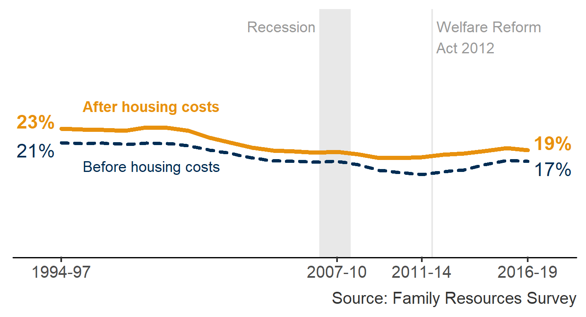
It is estimated that 19% of Scotland’s population (1.02 million people each year) were living in relative poverty after housing costs in 2016-19. Before housing costs, 17% of the population (900,000 people) were living in poverty in 2016-19.
Relative poverty is a measure of whether the income of the poorest households are keeping pace with middle income households across the UK.
The proportion of people in relative poverty after housing costs had been falling slightly between the late nineties and the lowest point in this time series in 2009-12. After that, it started to rise again up until now, where the rise appears to have stopped. Before housing costs poverty looks similar, with the all-time low slightly later, in 2011-14.
Absolute poverty rate for all individuals stable
Figure 2 - Proportion of people in absolute poverty, Scotland

It is estimated that 17% of Scotland’s population (910,000 people each year) were living in absolute poverty after housing costs in 2016-19. After a long decline since the beginning of this time series in the mid-nineties, absolute poverty rates have stagnated since 2006-09.
Before housing costs, 14% of Scotland’s population (770,000 people each year) were in absolute poverty. The trend is similar to the after housing costs measure, although the downward trend started to stagnate a few years later.
The gap between the before and after housing costs measure had widened in 2008-11, but has remained steady since.
Absolute poverty is a measure of whether the incomes of the poorest households are keeping pace with inflation, and is based on a fixed poverty threshold, the relative poverty threshold in 2010/11.
Children
Relative poverty rate for children no longer rising
Figure 3 - Proportion of children in relative poverty, Scotland
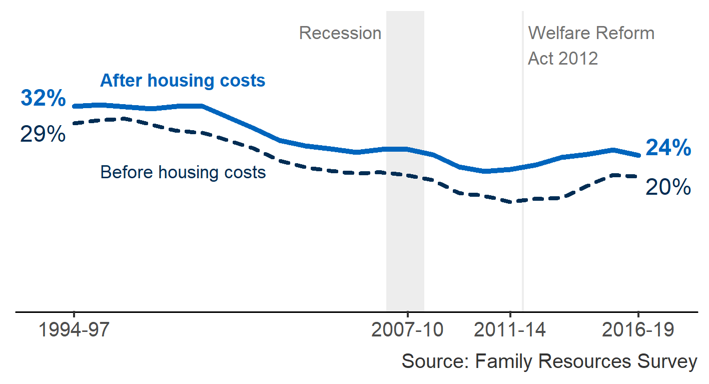
It is estimated that 24% of children (230,000 children each year) were living in relative poverty after housing costs in 2016-19. Before housing costs, it is estimated that 20% of children (200,000 children each year) were in relative poverty.
After a long fall between 1999-02 and 2010-13, which halted briefly just before the recession, child poverty rates had been rising again but did not rise in the latest periods.
The Child Poverty (Scotland) Act 2017 requires us to report annually on a number of child poverty measures. The latest single-year estimates can be found in the Child Poverty Update section below.
Absolute poverty rate for children stable
Figure 4 - Proportion of children in absolute poverty, Scotland
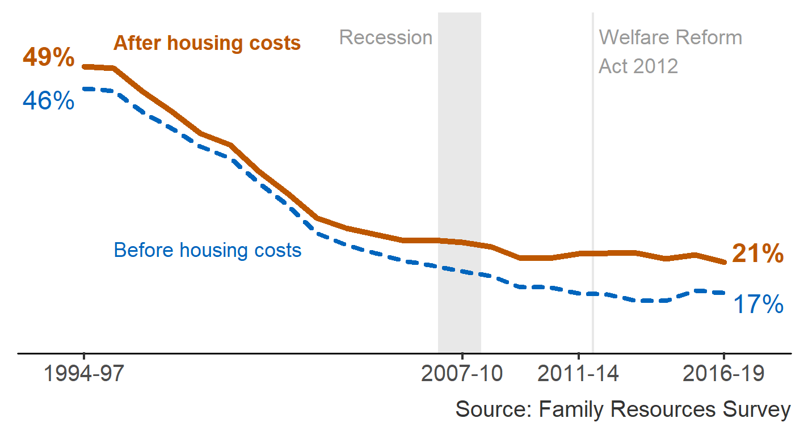
Absolute child poverty after housing costs affected 21% (210,000 children each year). Before housing costs, absolute child poverty was at 17% (160,000 children each year).
Absolute child poverty before housing costs steadily decreased between the mid-nineties and just before the recession. The decrease of the after housing costs rate then slowed down. The before housing costs measure continued to decrease until 2013-16 and has been largely flat since. As a result, the gap between absolute child poverty before and after housing costs widened in recent years.
In this publication, ‘child’ refers to a dependent child. This is explained in Annex B. Definitions.
Children in combined material deprivation and low income broadly stable
Figure 5 - Proportion of children in combined low income and material deprivation, Scotland
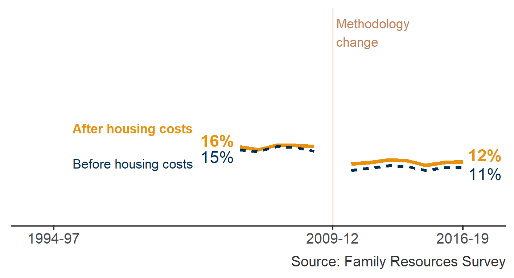
It is estimated that 12% of children (120,000 children each year) were living in combined low income and material deprivation after housing costs in 2016-19. Before housing costs, this was 11% of children (110,000 children).
Combined low income and child material deprivation is an additional way of measuring living standards and refers to the inability of households to afford basic goods and activities that are seen as necessities in society.
More detail on this can be found in the Annex B. Definitions.
Material deprivation data has been collected since 2004/05. Due to a change in the methodology, it is not possible to compare the most recent years with years before 2010-13. The break in the time series indicates this change.
In-work poverty for children no longer rising
Figure 6 - Proportion of children in relative poverty who live in working households, Scotland
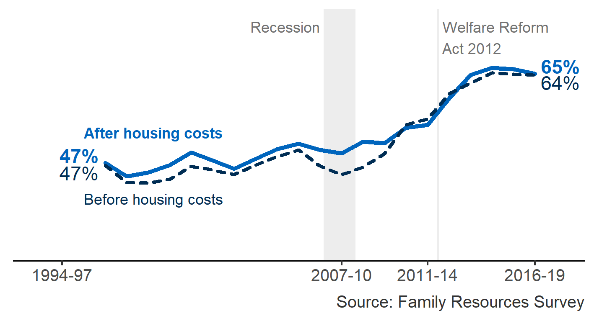
While the poverty risk is much lower for children in working households compared to those in non-working households, not all work pays enough to lift the household above the poverty threshold.
It is estimated that in 2016-19, 65% of children in relative poverty after housing costs (150,000 children each year) were living in working households. Before housing costs, 64% of children in poverty (130,000 children) were living in working households.
This data suggests that after a steady and steep increase of in-work poverty since 2007-10, in-work poverty is now stable at a high level.
The terms ‘working’ and ‘in-work poverty’ here refer to paid employment only. In-work poverty refers to people living in households where at least one member of the household is in either full or part-time paid work, but where the household income is below the relative poverty threshold.
Working-age adults
Relative poverty rate for working-age adults stable
Figure 7 - Proportion of working-age adults in relative poverty, Scotland
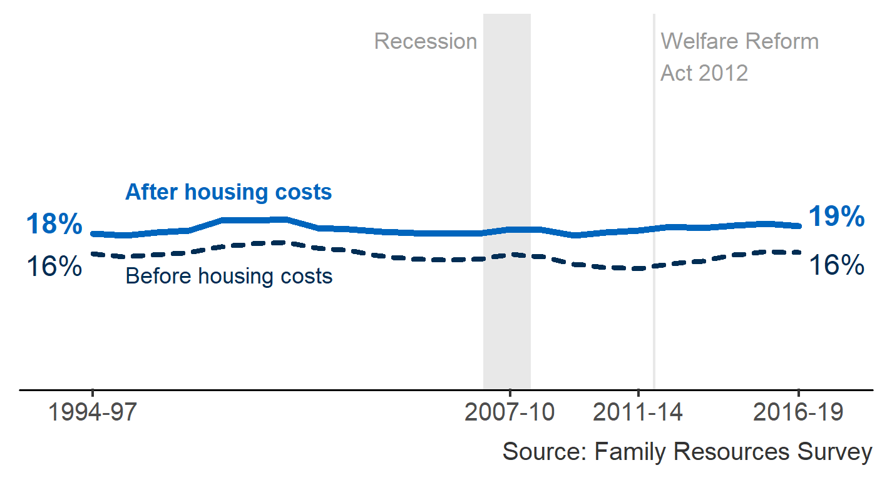
Relative poverty for working-age adults has been broadly stable since reporting began. Relative poverty in 2016-19 was estimated to be 19% after housing costs, and 16% before housing costs.
In 2016-19, there were 640,000 working-age adults in poverty after housing costs, compared to 530,000 before housing costs.
Working-age adults are defined as all adults up to the state pension age. State pension age is currently 65 for men, and since November 2018 also for women.
Absolute poverty rate for working-age adults stable
Figure 8 - Proportion of working-age adults in absolute poverty, Scotland

Absolute poverty amongst working-age adults remained broadly stable during the last fifteen years. In 2016-19, 17% of working-age adults were in absolute poverty after housing costs, and 14% before housing costs.
This means that in 2016-19, there were 580,000 working-age adults each year in absolute poverty after housing costs, compared to 460,000 before housing costs.
Working-age adults are considered to be in poverty when they live in a household which is in poverty.
In-work poverty for working-age adults now stable
Figure 9 - Proportion of working-age adults in relative poverty who live in a working household, Scotland
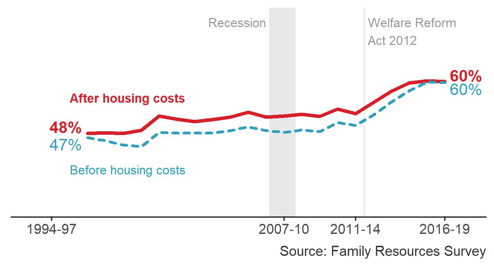
In 2016-19, 60% of working-age adults in relative poverty after housing costs as well as before housing costs were living in working households. This represents 380,000 working-age adults in poverty after housing costs, and 310,000 working-age adults before housing costs.
In-work poverty for working-age adults continuously increased since 2011-14, and in the most recent period, it continued to be at its highest since reporting began.
The terms ‘working’ and ‘in-work poverty’ here refer to paid employment only. In-work poverty refers to people living in households where at least one member of the household is in either full or part-time paid work, but where the household income is below the relative poverty threshold.
Pensioners
Relative poverty rate for pensioners stable
Figure 10 - Proportion of pensioners in relative poverty, Scotland
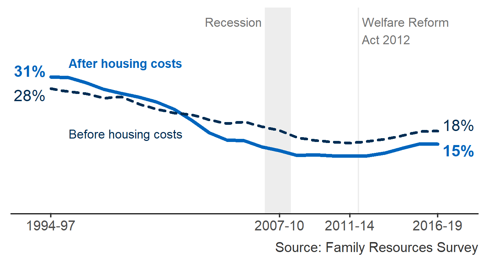
Relative poverty after housing costs for pensioners was 15% in 2016-19 (150,000 pensioners each year). Before housing costs, 18% of pensioners (180,000 pensioners) were in relative poverty.
Relative pensioner poverty showed a long decline until 2008-11, was then largely stable between until 2013-16 before it started to rise again in 2013-16 (before housing costs) and 2014-17 (after housing costs). In the latest period, relative pensioner poverty may have stopped rising.
The majority of pensioners own their home. Examining pensioners’ income after deducting housing costs allows for more meaningful comparisons of income between working-age adults and pensioners, or for pensioners over time.
Absolute poverty rate for pensioners stable
Figure 11 - Proportion of pensioners in absolute poverty, Scotland
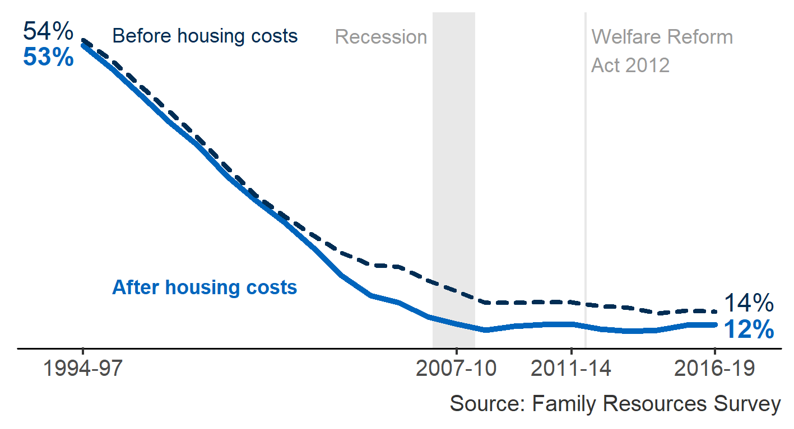
Absolute poverty after housing costs for pensioners was 12% (130,000 pensioners each year) in 2016-19. Before housing costs, it was 14% (150,000 pensioners).
Absolute poverty has remained broadly stable since 2008-11 following a continuous decrease since reporting began.
Pensioners are defined as all those adults above state pension age. State pension age is currently 65 for men, and since November 2018 also for women.
Pensioners in material deprivation broadly stable
Figure 12 - Proportion of pensioners in material deprivation
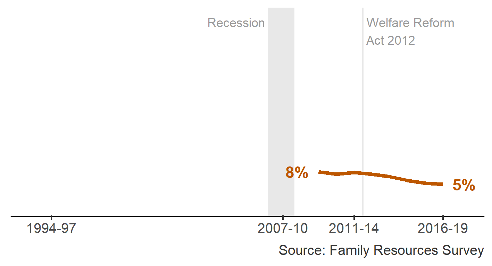
In 2016-19, 5% of pensioners (50,000 pensioners each year) were in material deprivation.
This data has been collected since 2009.
Pensioner material deprivation is different to other measures of poverty, including the child low income and material deprivation measure, in that is not associated with an income threshold. It captures issues such as whether poor health, disability and social isolation prevent access to goods and services, rather than solely low income.
More information about pensioner material deprivation can be found in the Annex B. Definitions.
Pensioner material deprivation is included for pensioners aged 65 or over.
Equality analysis
Gender
Income is measured at a household level, which makes it difficult to measure the poverty rate for individual adults living with a partner. For those women and men who live in households with other adults, all adults will either be above or below the poverty threshold. In the analysis below, we therefore only include single adult households (with or without dependent children).
Relative poverty rates highest for single women with children but gap is smaller than it used to be
Figure 13 - Proportion of single working-age adults in relative poverty after housing costs, Scotland
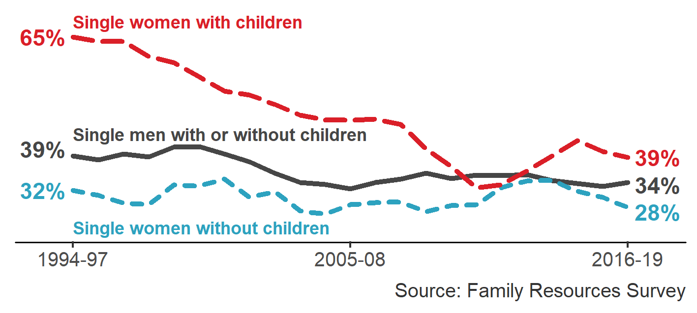
In 2016-19, the relative poverty rate after housing costs for single working-age adults was 32%, higher than for the total working-age adult population (19%).
The poverty rate was highest for single women with children (39%). The poverty rate for single women without children was 28%, and for single men (with or without children) was 34%.
Until 2010-13, the gap in poverty rates between these groups had narrowed, but in recent years it widened again.
In this publication, ‘child’ refers to a dependent child living in the household. This is explained in Annex B. Definitions.
Relative poverty rates higher for single female pensioners than male
Figure 14 - Proportion of single pensioners in relative poverty after housing costs, Scotland
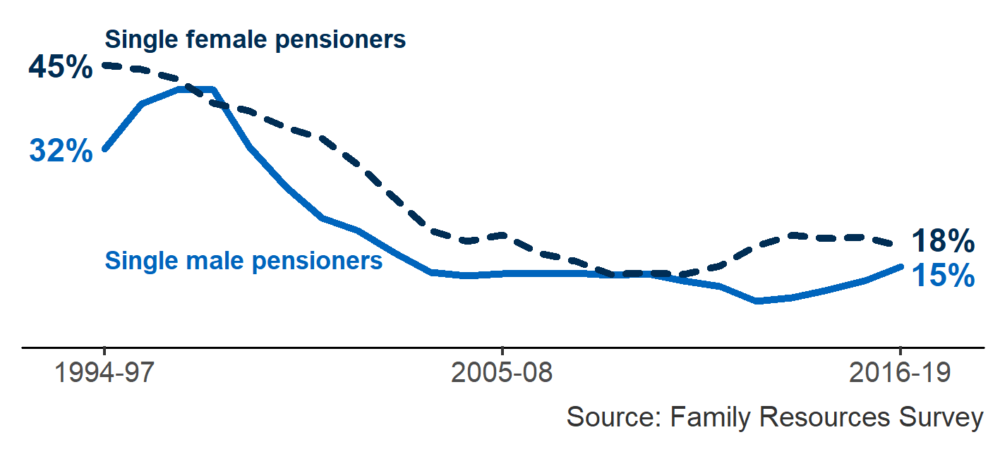
In 2016-19, 18% of single female pensioners and 15% of single male pensioners were in relative poverty after housing costs. In most years, the poverty rate after housing costs for single female pensioners had been higher than that for single male pensioners, with this gap only recently widening and closing again.
Some of the difference in pensioner poverty between genders may be due to different age profiles. For example, in 2016-19, 40% of female single pensioners were aged over 80 compared with 31% of male single pensioners. Older pensioners may have different sources of income which may result in them having lower incomes.
Before housing costs data is available in the associated tables.
Marital status
Relative poverty rates highest for singles, divorced & separated, and lowest for married adults
Figure 15 - Proportion of adults in relative poverty after housing costs, Scotland
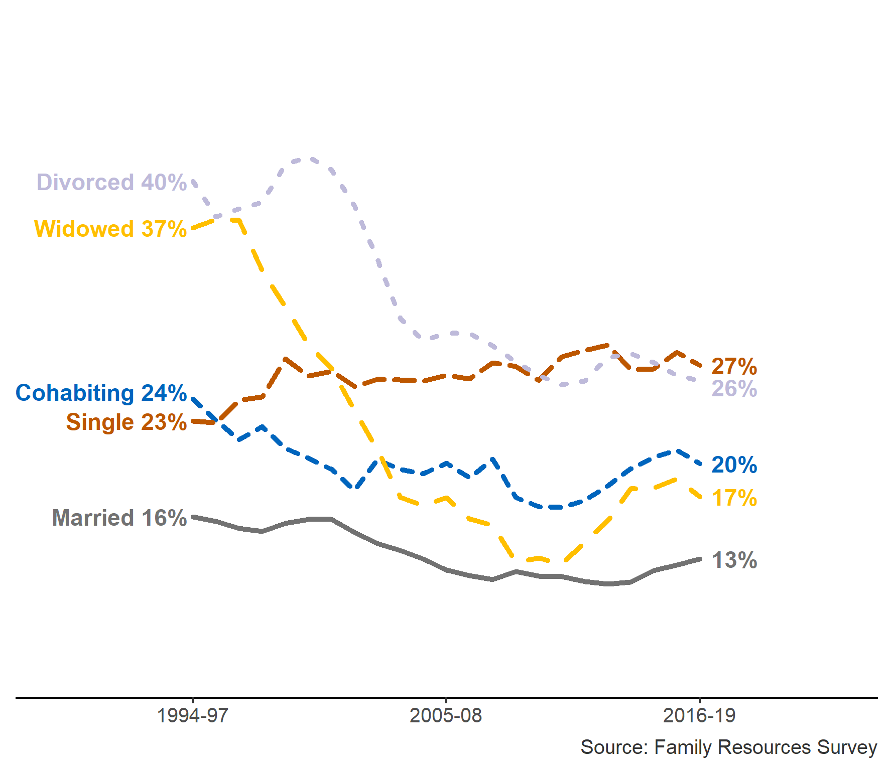
In 2016-19, the relative poverty rate after housing costs was highest for single adults (27%, 260,000 adults each year) and divorced (or separated) adults (26%, 90,000). Married adults were the least likely to be in poverty (13%, 270,000), and widowed and cohabiting adults were in the middle (17% and 20%; 50,000 and 120,000).
Poverty among widowed and divorced/separated adults largely decreased over the long term, whereas the trend for singles, cohabiting and married adults was broadly flat over time.
By “Single” we mean adults who have never been married or in a Civil Partnership, and are not living with their partner. The “Married” category includes Civil Partnerships, and couples who are married or in a Civil Partnership but temporarily living apart. The “Divorced” category includes divorced couples, dissolved Civil Partnerships, and couples who are married or in a Civil partnership but are not living together because of estrangement.
Ethnicity
Relative poverty rates higher for ethnic minorities
Figure 16 - Proportion of people in relative poverty after housing costs, Scotland 2014-2019
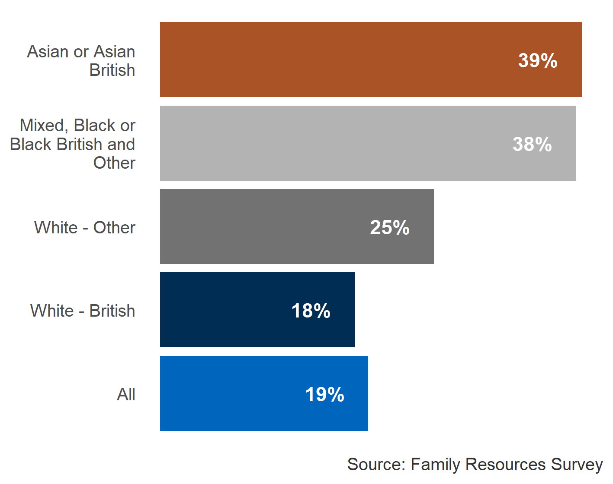
Before housing costs data is available in the associated tables.
In 2014-19, people from non-white minority ethnic groups were more likely to be in relative poverty after housing costs compared to those from the ‘White - British’ and ‘White - Other’ groups.
The poverty rate was 39% for the ‘Asian or Asian British’ ethnic groups, and 38% for ‘Mixed, Black or Black British and Other’ ethnic groups.
The poverty rate amongst the ‘White - Other’ group was 25% (80,000 people) and that of the ‘White - British’ group was 18% (860,000 people).
Ethnicity data relates to all people in a household and is based on the ethnicity of the adult with the highest income.
This analysis doesn’t take into account differences in the age profiles of the ethnic groups. For the ‘White - British’ ethnic group the median average age of the highest income earner was 50 compared with a median age of 36 for the ‘White - Other’ ethnic group, 39 for ‘Asian or Asian British’ and and 40 for ‘Mixed, Black, Black British or Other’ ethnic groups.
Older people have a lower poverty rate, so the age profile partly explains the lower poverty rate for the ‘White - British’ ethnic group. However, the age difference cannot explain the entire gap in poverty rates between ethnic groups.
More information on ethnicity data
The above chart shows an ethnicity breakdown based on an average of data from the past five financial years. This provides a reasonably detailed breakdown, whilst still using relatively recent data. A more detailed ethnicity breakdown using ten years of data was previously published: www.gov.scot/publications/additional-poverty-statistics-2018/
Due to the small sample sizes for some of the ethnic groups, the measurement uncertainty will be fairly large. A time series hasn’t been produced for poverty rates by ethnicity as this uncertainty in the data will obscure any long-term trends. Similarly, the estimated number of people in poverty is not available for some ethnic groups due to small sample sizes.
Religion
Relative poverty rates higher for Muslims
Figure 17 - Proportion of adults in relative poverty after housing costs, Scotland 2014-19
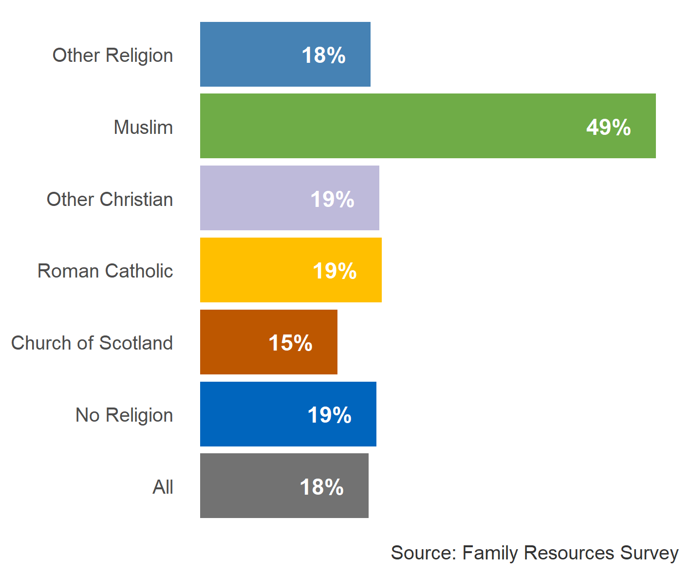
In 2014-19, Muslim adults were more likely to be in relative poverty (49%) than adults overall (18%), after housing costs were taken into account.
Of adults belonging to the Church of Scotland, 15% were in relative poverty after housing costs (180,000 adults each year), compared to 19% of Roman Catholic adults (120,000 adults) and adults of other Christian denominations (also 19%; 70,000 adults).
This analysis doesn’t take into account differences in the age profiles of the religions. For adults belonging to the Church of Scotland, the median average age was 61. In contrast, the median age was 35 for Muslim adults, and 40 for adults belonging to no religion.
Older people have a lower poverty rate, so age profile partly explains the lower poverty rate for people belonging to the Church of Scotland. However, the age difference cannot explain the entire gap in poverty rates between religious groups.
Data on religion is available for adults only, so this chart doesn’t include children in a household.
Before housing costs data is available in the associated tables.
More information on religion data
The above chart shows an average for data from the past five financial years.
Due to the small sample sizes for some of the religious groups, the measurement uncertainty will be fairly large. A time series hasn’t been produced for poverty rates by religion, as this uncertainty in the data will obscure any long-term trends. Similarly, the estimated number of adults in poverty is not available for some religious groups due to small sample sizes.
Disability
Relative poverty rates higher where a household member is disabled
Figure 18 - Proportion of people in relative poverty after housing costs, Scotland
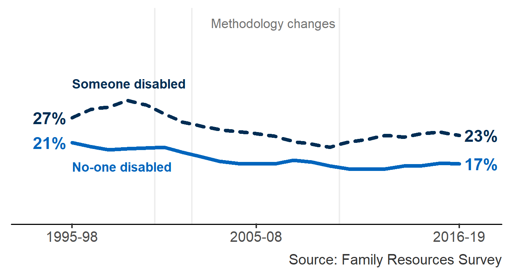
Poverty rates remain higher for households in which somebody is disabled compared to those where no-one is disabled. The gap between the two groups has remained fairly steady over the last few years.
In 2016-19, the poverty rate after housing costs for people in households with a disabled person was 23% (490,000 people each year). This compares with 17% (530,000 people) in a household without disabled household members.
Before housing costs data is available in the associated tables.
The way in which information on disabled people is collected changed several times during this timeseries. This causes breaks in the timeseries between 2001/02 and 2002/03, between 2003/04 and 2004/05, and between 2011/12 and 2012/13. Since 2012/13, disabled people are identified as those who report any physical or mental health condition(s) or illness(es) that last or are expected to last 12 months or more, and which limit their ability to carry out day-to-day activities. Due to these changes, care needs to be taken when considering long-term trends.
More detail can be found on pages 34-36 in the 2015/16 HBAI technical report.
Additional living costs of disabled people
The relative poverty measure doesn’t take into account the fact that additional living costs may be incurred due to the illness or disability in question. The analysis on the following page attempts to make an adjustment to the poverty rates to partly account for additional living costs for those households where someone is in receipt of disability benefits.
Relative poverty rates, with disability benefits removed from household income, higher where a household member is disabled
Figure 19 - Proportion of people in relative poverty (disability benefits removed from household income) after housing costs, Scotland
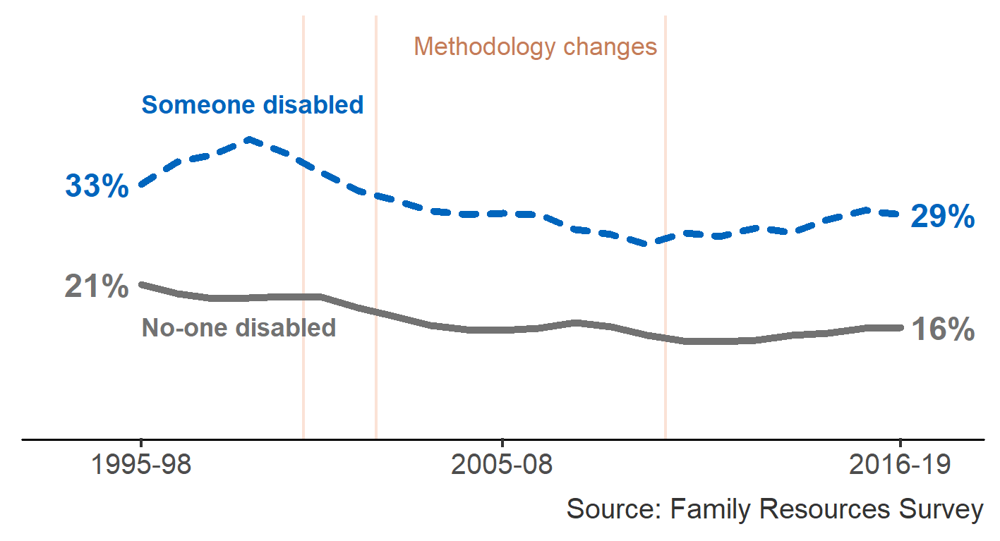
Whilst it is recognised that there are additional costs associated with disability, research shows that these vary greatly in level and nature, and there is no general agreement on how to measure these costs.
Analysis on this page excludes Disability Living Allowance, Attendance Allowance and Personal Independence Payments from total household income. These benefits are paid as a contribution towards the additional living costs for disabled people. If this income is excluded from total household income, then we are able to compare households with and without a disabled household member on a more like for like basis.
In 2016-19, as in previous years, the poverty rate was higher for individuals in households with a disabled person, when disability related benefits are not included in the household income. After housing costs, the poverty rate was 29% (620,000 people each year) for people living with a disabled household member, and 16% (500,000 people) for those without.
Before housing costs data is available in the associated tables.
Excluding disability benefits from the analysis changes the poverty threshold. This is because some households now move down the income distribution, which lowers the median income and therefore also the poverty threshold. As a consequence, some households without a disabled person that were just below the poverty threshold in the previous analysis will now be above the threshold. As a result, the poverty rate for households without a disabled person is slightly lower.
Income
Household income trends
Median weekly household income growing
Figure 20 - Median weekly household income in 2018/19 prices, Scotland
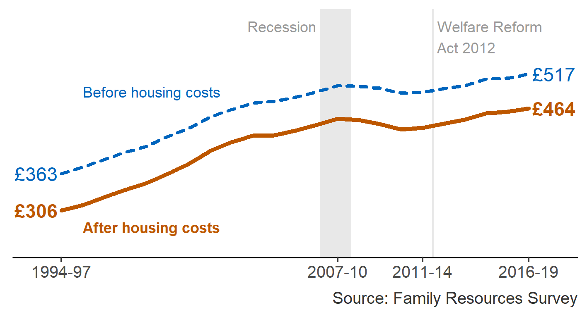
In 2016-19, median household income before housing costs was £517 per week. Median income has increased slowly but steadily since the recovery after the last recession, and has reached its highest level since reporting began.
Following the same trend, median income after housing costs was £464 per week in 2016-19, also at its highest level since reporting began.
Median incomes rose for all age groups: children, working-age adults and pensioners, but very little for working-age adults. This data can be found in the associated tables.
All incomes are quoted in 2018/19 prices.
Lower incomes increasing more than higher incomes
Figure 21 - Weekly household income before housing costs at each decile point in 2018/19 prices, Scotland
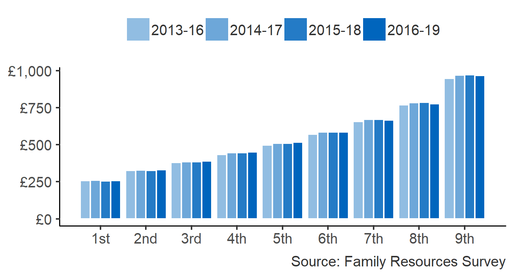
This chart shows how weekly equivalised incomes before housing costs have changed from 2013-16 to 2016-19 across the different income deciles. The bottom five decile points saw small increases compared to the previous period, whereas the top three decile points saw small decreases.
Over the last four years shown in the chart, middle income households saw the largest relative and absolute increases in their household income.
After housing costs data is available in the associated tables.
Deciles (or decile points) are the income values which divide the Scottish population, when ranked by income, into ten equal-sized groups. Decile is also often used as a shorthand term for decile group; for example ‘the bottom decile’ is used to describe the bottom ten percent of the income distribution.
Income distribution and poverty thresholds
Distribution of weekly household income
Figure 22 - Equivalised weekly household income distribution before housing costs, Scotland 2016-19
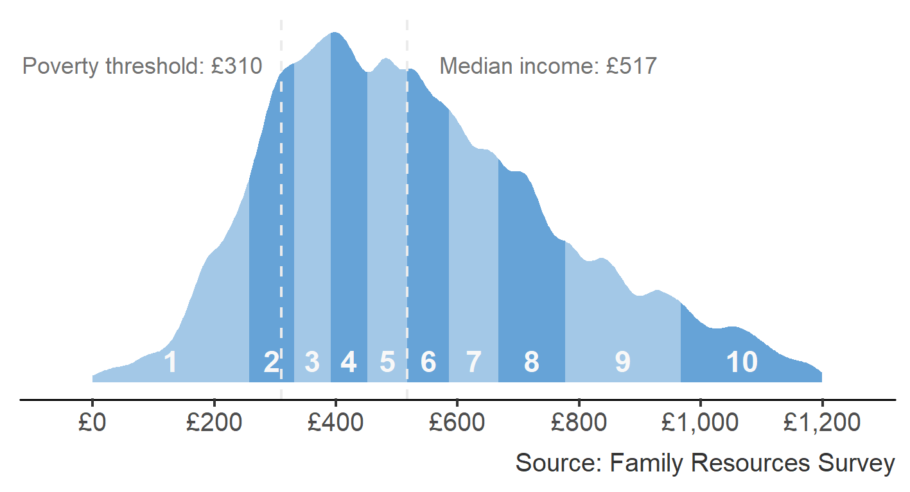
This chart shows the distribution of weekly income before housing costs across Scotland in 2016-19 with relative poverty threshold, UK median income, and income decile groups. Incomes of £0 and below and those above £1,200 are excluded from this chart.
Many people have household incomes near the poverty threshold. This means that small movements in the overall distribution can sometimes lead to sizeable movements in poverty rates.
Decile groups are groups of the population defined by the decile points. The first decile group is the ten percent of the population with the lowest incomes. The second decile group contains individuals with incomes above the lowest decile point but below the second decile point.
Most of the income estimates in this publication are based on equivalised income. This means that household income is adjusted to reflect different household sizes and compositions. When income is not equivalised, households of different sizes have different poverty thresholds. The table below shows the relative and absolute poverty thresholds, before equivalisation, for households of different sizes.
The incomes presented elsewhere in this report use the value for “Couple with no children” as the standard; incomes of all other household types are adjusted (equivalised) to reflect their different household composition. An after housing costs table is available in the associated tables.
Table 1 - Income and poverty thresholds for different household types before housing costs, Scotland 2016-19
Single person with no children Couple with no children Single person with children aged 5 and 14 Couple with children aged 5 and 14 Before housing costs incomes weekly Annual weekly annual weekly annual weekly annual UK median income £347 £18,100 £517 £27,000 £621 £32,400 £792 £41,300 Scottish median income £346 £18,100 £517 £27,000 £620 £32,400 £791 £41,300 Relative poverty threshold: 60% of UK median income £208 £10,800 £310 £16,200 £373 £19,400 £475 £24,800 Absolute poverty threshold: 60% of inflation-adjusted 2010/11 UK median income £193 £10,000 £287 £15,000 £345 £18,000 £440 £22,900
Income sources
The chart below shows the different sources of gross income by decile, ranking the population by income and dividing it into ten equal-sized groups. Income components are considered before tax; this is therefore a different definition of household income from that used elsewhere in this report.
Earnings and social security payments main household income sources
Figure 23 - Income sources as a percentage of gross income by income decile, Scotland 2016-19

Higher income households receive a large proportion of their income from earnings, and lower income households receive more of their income from social security payments. Social security payments include the state pension.
Earnings account for around 45% of gross income for those in the first two deciles compared to over 80% for those in the top three deciles.
The proportion of household income from earnings exceeds that from social security payments for around 80% of the population (those above the 2nd percentile point).
Income inequality
Palma ratio of income inequality fluctuating
Figure 24 - Palma ratio of income inequality before housing costs, Scotland
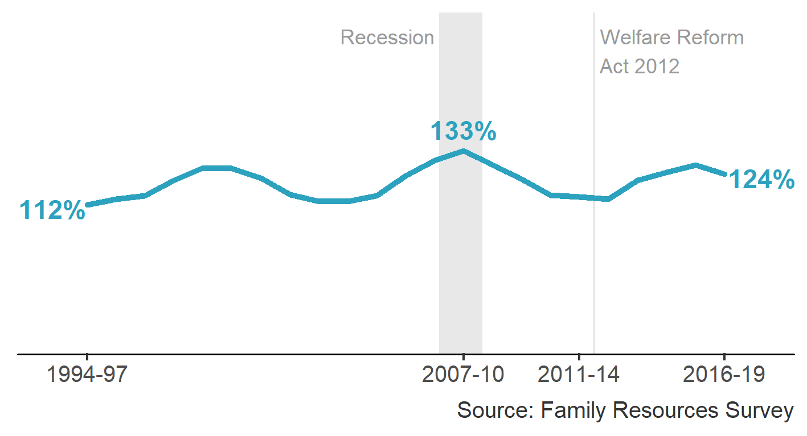
This chart shows the ratio of total income received by the top ten percent of the population divided by the total income of the bottom forty percent of the population (expressed as a percentage) over time. This measure of how equally income is distributed across the population is known as the “Palma ratio” or “S90/S40 ratio”. Palma is used internationally to estimate the extent of inequality between those at the top of the income distribution and those at the bottom. The Palma ratio is usually calculated from income before housing costs.
In 2016-19, the top ten percent of the population had 24% more income than the bottom forty percent combined. This compares to 33% more income of the top ten percent in 2007-10, the period with the highest income inequality in this time series as measured by the Palma ratio.
Income inequality has been fluctuating since the beginning of this data collection in the mid-nineties, and, after the most recent low point in 2012-15 has now ceased to increase.
Additional income inequality data, including the Gini coefficient and income decile shares, is available in the associated tables.
Data sources
Family Resources Survey, Households Below Average Income (HBAI) dataset
All the figures in this publication come from the Department for Work and Pensions’ (DWP) Households Below Average Income dataset which is produced from the Family Resources Survey. UK figures are published by DWP in ‘Households Below Average Income: 2018/19’ on the same day as ‘Poverty and Income Inequality in Scotland: 2016-19’. For the UK figures, as well as more detail about the way these figures are collected and calculated, see the DWP website.
What does HBAI measure?
Households Below Average Income (HBAI) uses household disposable incomes, adjusted for the household size and composition, as a proxy for material living standards. More precisely, it is a proxy for the level of consumption of goods and services that people could attain given the disposable income of the household in which they live.
The unit of analysis is the individual, so the populations and percentages in the tables are numbers and percentages of individuals - both adults and children.
The living standards of an individual depend not only on his or her own income, but also on the income of others in the household. Consequently, the analyses are based on total household income: the equivalised income of a household is taken to represent the income level of every individual in the household. Equivalisation, a technique that allows comparison of incomes between households of different sizes and compositions, is explained in Annex B under Equivalisation. Thus, all members of any one household will appear at the same point in the income distribution.
Housing Costs
It could be argued that the costs of housing faced by different households at a given time do not always match the true value of the housing that they actually enjoy, and that housing costs should therefore be deducted from any definition of disposable income. However, any measure of income defined in this way would understate the relative standard of living of those individuals who were actually benefiting from a better quality of housing by paying more for better accommodation. Income growth over time would also understate improvements in living standards where higher costs reflected improvements in the quality of housing.
Conversely, any income measure which does not deduct housing costs may overstate the living standards of individuals whose housing costs are high relative to the quality of their accommodation. Growth over time in income before housing costs could also overstate improvements in living standards for low income groups in receipt of housing benefit, and whose rents have risen in real terms. This is because housing benefit may also rise to offset the higher rents (for a given quality of accommodation) and would be counted as an income rise, although there would be no associated increase in the standard of living.
Therefore, this publication presents analyses on two bases: before housing costs (BHC) and after housing costs (AHC). This is principally to take into account variations in housing costs that themselves do not correspond to comparable variations in the quality of housing.
Persistent Poverty figures
New figures on persistent poverty were published on 26 March 2020 and can be found at http://www.gov.scot/ISBN/9781839606236.
Persistent poverty identifies the number of individuals living in relative poverty for 3 or more of the last 4 years. It therefore identifies people who have been living in poverty for a significant period of time, the rationale being that this is more damaging than brief periods spent with a low income, with the impacts affecting an individual through their lifetime.
One of the four statutory child poverty target measures is persistent child poverty after housing costs.
These figures come from the Understanding Society survey which tracks individuals over time. The persistent poverty figures are not directly comparable to the figures in this publication as they use different income definitions and cover different time periods, but they provide useful additional information on poverty in Scotland.
Definitions
Measures of income
The income measure used in HBAI is weekly net (disposable) equivalised household income. This comprises total income from all sources of all household members including dependants. An adjustment is made to sample cases at the top of the income distribution to correct for volatility in the highest incomes captured in the survey.
Income is adjusted for household size and composition by means of equivalence scales, which reflect the extent to which households of different size and composition require a different level of income to achieve the same standard of living. This adjusted income is referred to as equivalised income (see definition below for more information on equivalisation).
- Income before housing costs (BHC) includes the following main components: net earnings; profit or loss from self-employment after income tax and NI; all UK and Scottish social security payments, including housing and council tax benefits; all tax credits; occupational and private pension income; investment income; maintenance payments; top-up loans and parental contributions for students, educational grants and payments; the cash value of certain forms of income in kind such as free school meals, free welfare milk and free school milk and free TV licences for the over 75s (where data is available). Income is net of: income tax payments; National Insurance contributions; contributions to occupational, stakeholder and personal pension schemes; council tax; maintenance and child support payments made; and parental contributions to students living away from home.
- Income after housing costs (AHC) is derived by deducting a measure of housing costs from the above income measure.
- Housing costs include the following: rent (gross of housing benefit); water rates; mortgage interest payments; structural insurance premiums; ground rent and service charges.
Income sources
The analysis on income sources is the only analysis in this report not using net income. This analysis is based on income before taxes from employment or self-employment, social security payments, investment, occupational pensions and other income. In some cases, income from self-employment was negative in a year, for example, when someone in self-employment made a loss. In these cases, total income from earnings was reset to zero.
Real prices
Unless otherwise stated, all figures relating to income are in 2018/19 prices. Values from previous years are uprated to account for inflation using a variant of the Consumer Price Index (CPI). This follows a change in methodology for 2014/15. Prior to this the Retail Price Index (RPI) was used.
This change followed an announcement by the National Statistician that, in accordance with the Statistics and Registration Service Act 2007, the RPI and its derivatives had been assessed against the Code of Practice for Official Statistics and found not to meet the required standard for designation as National Statistics.
Following a subsequent review the National Statistician, John Pullinger, wrote to the Chair of the UKSA, Sir Andrew Dilnot, setting out his view that RPI “is not a good measure of inflation” and that future usage is strongly discouraged in favour of alternative measures.
This led to a change in HBAI methodology in 2014/15 and the Scottish Government adopted the change in deflator to allow consistent poverty estimates for Scotland and the UK.
Full details can be found at this link: Methodological changes to poverty statistics
Equivalisation
Equivalisation is the process by which household income is adjusted to take into account variations in the size and composition of the households in which individuals live. This reflects the common sense notion that, in order to enjoy a comparable standard of living, a household of, for example, three adults will need a higher income than a single person living alone. The process of adjusting income in this way is known as equivalisation and is needed in order to make sensible income comparisons between households.
Equivalence scales conventionally take an adult couple without children as the reference point, with an equivalence value of one. The process then increases relatively the income of single person households (since their incomes are divided by a value of less than one) and reduces relatively the incomes of households with three or more persons, which have an equivalence value of greater than one.
Consider a single person, a couple with no children, and a couple with two children aged fourteen and ten, all having unadjusted weekly household incomes of £200 (Before Housing Costs). The process of equivalisation, as conducted in HBAI, gives an equivalised income of £299 to the single person, £200 to the couple with no children, but only £131 to the couple with children.
The equivalence scales used here are the modified OECD scales. Two separate scales are used, one for income Before Housing Costs (BHC) and one for income After Housing Costs (AHC). Modified OECD rescaled to a couple without children is as follows:
BHC AHC First Adult 0.67 0.58 Spouse 0.33 0.42 Subsequent Adults 0.33 0.42 Children aged under 14 years 0.20 0.20 Children aged 14 years and over 0.33 0.42
The construction of household equivalence values from these scales is quite straightforward. For example, the BHC equivalence value for a household containing a couple with a fourteen year old and a ten year old child together with one other adult would be 1.86 from the sum of the scale values:
0.67 + 0.33 + 0.33 + 0.33 + 0.20 = 1.86
This is made up of 0.67 for the first adult, 0.33 for their spouse, the other adult and the fourteen year old child and 0.20 for the ten year old child. The total income for the household would then be divided by 1.86 in order to arrive at the measure of equivalised household income used in HBAI analysis.
Further information on equivalisation can be found in the methodology report on the Scottish Government website.
Dependent children
In this publication, ‘child’ refers to a dependent child. A dependent child is a person either aged 0-15, or aged 16-19 and: not married nor in a Civil Partnership nor living with a partner, and living with their parents, and in full-time non-advanced education or in unwaged government training.
Single women with children
Family types are becoming increasingly complex. In this publication, single women with children refers to a situation where the primary residence of a dependent child is in a household with one adult, who is female. Data for single men with dependent children is not available due to small sample sizes. This household type does not necessarily imply that the child only has contact with one parent. The child may have non-resident parents who contribute to their welfare. Currently, some, but not all income transfers from a non-resident parent to the resident parent (such as Child Maintenance payments) are included in the household income.
Poverty measurement from the Family Resources Survey
Individuals are defined as being in poverty if their equivalised net disposable household income is below 60 percent of the UK median. The median is the income value which divides a population, when ranked by income, into two equal sized groups. Since the mean is influenced considerably by the highest incomes, median income thresholds are widely accepted as a better benchmark when considering a derived measure for poverty. Sixty percent of the median is the most commonly used poverty measure.
For a couple with no children, the UK median income BHC in 2016-19 was £517 per week, which had increased by £6 in real terms since 2015-18. After housing costs, the UK median increased by £5 to £464 per week compared to 2015-18.
Consequently, the 60 percent poverty threshold, which is used to derive the low income household figures, has also increased in real terms, before and after housing costs. This means a household has to have a larger income in real terms to be above the poverty threshold.
Relative and absolute poverty
- Absolute poverty - individuals living in households whose equivalised income is below 60 percent of inflation adjusted median income in 2010/11. This is a measure of whether those in the lowest income households are seeing their incomes rise in real terms.
- Relative poverty - individuals living in households whose equivalised income is below 60 percent of median income in the same year. This is a measure of whether those in the lowest income households are keeping pace with the growth of incomes in the economy as a whole.
Material deprivation for children
A suite of questions designed to capture the material deprivation experienced by households with children has been included in the Family Resources Survey since 2004/05. Respondents are asked whether they have 21 goods and services, including child, adult and household items. The list of items was identified by independent academic analysis. See McKay, S. and Collard, S. (2004). Together, these questions form the best discriminator between those households that are deprived and those that are not. If they do not have a good or service, they are asked whether this is because they do not want them or because they cannot afford them.
These questions are used as an additional way of measuring living standards for children and their households.
A prevalence weighted approach has been used, in combination with a relative low income threshold. The income threshold is 70 percent of the median income. Prevalence weighting is a technique of scoring deprivation in which more weight in the deprivation measure is given to households lacking those items that most in the population already have. This means a greater importance, when an item is lacked, is assigned to those items that are more commonly owned in the population.
Changes to measuring material deprivation in 2010/11
The 21 items in the suite of questions used to measure material deprivation are designed to reflect the items and activities people in the UK believe to be necessary. These items are reviewed periodically to ensure the measure remains a relative measure of poverty. In 2010/11 four new questions about additional items were included in the FRS to be used in the future calculation of material deprivation scores, replacing the four existing items that were identified by research as potentially out of date partly because the proportion of the population considering them necessary had fallen. As such, there is a break in the series for child low income/material deprivation and estimates from 2010/11 onwards cannot be compared to those from before 2010/11.
In the 2010/11 FRS, both the new and the old questions were asked. As such, estimates are presented based on both sets of questions for this year.
For further information about material deprivation see the DWP Households Below Average Income publication.
Material deprivation for pensioners
A suite of questions designed to capture the material deprivation experienced by pensioner households has been included in the Family Resources Survey since 2009/10. Respondents are asked whether they have access to 15 goods and services. The list of items was identified by independent academic analysis. See:
- Legard, R., Gray, M. and Blake, M. (2008), Cognitive testing: older people and the FRS material deprivation questions, Department for Work and Pensions Working Paper Number 55. Available on the Bristol University webpages.
- McKay, S. (2008), Measuring material deprivation among older people: Methodological study to revise the Family Resources Survey questions, Department for Work and Pensions Working Paper Number 54. Available on the Bristol University webpages. Together, these questions form the best discriminator between those pensioner households that are deprived and those that are not.
Where they do not have a good or service, pensioner households are asked whether this is because they do not have the money for this, it is not a priority on their current income, their health / disability prevents them, it is too much trouble or tiring, they have no one to do this with or help them, it is not something they want, it is not relevant to them, or any other reason. Where a pensioner lacks one of the material deprivation items for one of the following reasons - they do not have the money for this, it is not a priority for them on their current income, their health / disability prevents them, it is too much trouble or tiring, they have no one to do this with or help them, or any other reason - they are counted as being deprived for that item.
The exception to this is for the question on whether they could cover an unexpected expense, where the follow up question was asked to explore how those who responded ‘yes’ would cover this cost. Options were: use own income but cut back on essentials, use own income but not need to cut back on essentials, use savings; use a form of credit, get money from friends or family, or any other reason. Pensioners are counted as materially deprived for this item if and only if they responded ‘no’ to the initial question.
The same prevalence weighted approach has been used to that for children, in determining a deprivation score. Prevalence weighting is a technique of scoring deprivation in which more weight in the deprivation measure is given to households lacking those items that most already have. This means a greater importance, when an item is lacked, is assigned to those items that are more commonly owned in the pensioner population.
For children, material deprivation is presented as an indicator in combination with a low income threshold. However for pensioners, the concept of material deprivation is broad and very different from low income; therefore, it is appropriate to present it as a separate measure.
A technical note given a full explanation of the pensioner material deprivation measure is available for download.
Population coverage
The FRS is a survey of private households. This means that people in residential institutions, such as nursing homes, barracks, prisons or university halls of residence, and also homeless people are excluded from the scope of the analysis presented here. The area of Scotland north of the Caledonian Canal was included in the FRS for the first time in the 2001/02 survey year, and from the 2002/03 survey year, the FRS was extended to include a 100 percent boost of the Scottish sample. This has increased the sample size available for analysis at the Scottish level. In 2002/03, the sample size was around five thousand. However, following cost savings introduced to the FRS in 2010, the sample size in Scotland has reduced. It was just over 2,800 households in 2018/19. For further information see the DWP Households Below Average Income publication.
Reliability of estimates
The figures are estimates based on sample surveys and are therefore subject to sampling variation. Caution should be exercised in the interpretation of small year-on-year fluctuations. Identification of trends should be based on data for several years. Estimates for the confidence intervals around the key figures presented here will be available on the Scottish Government Poverty statistics webpages shortly after publication.
The method used to calculate these confidence intervals changed in 2015/16. Information on this can be in DWP’s statistical notice. The new method widens confidence intervals for most estimates making statistically significant results less likely than before.
The Family Resources Survey publication contains information on topics such as sample design, non-response biases, weighting; item non-response, imputation and editing; accuracy of income data.
Detailed HBAI definitions and methodology
More detailed information on definitions and methodology can be found in DWP’s publication.
Find more information
Associated tables and further analysis
This publication contains the headline poverty and income inequality statistics. The associated tables contain all data used in the charts as well as additional data, for example, the equivalent before-housing-costs estimates where charts only show after-housing-costs estimates. This publication and the associated tables are available here: www.gov.scot/ISBN/9781839606243
Additional relative and severe poverty and child poverty estimates including numbers, rates and compositions of those in poverty disaggregated by a wide range of personal and household characteristics are published as supplementary tables alongside this publication.
This and further analysis based on the FRS and HBAI datasets is published by the Scottish Government throughout the year on the Scottish Government’s poverty and child poverty statistics webpages.
Additional analysis themes are based on the needs of users. If you have any suggestions for future analysis please email:
social-justice-analysis@gov.scot or phone 0131 244 5851.
Scottish Government websites
- Poverty and income inequality analysis: www.gov.scot/collections/poverty-and-income-inequality-statistics/
- Confidence limits surrounding Scotland’s key poverty estimates: www.gov.scot/publications/poverty-in-scotland-methodology/pages/measurement-uncertainty/
- Child poverty analysis: www.gov.scot/collections/child-poverty-statistics/
- Wealth analysis: www.gov.scot/collections/wealth-statistics/
- Scottish Index of Multiple Deprivation: www.gov.scot/simd
- For further information on all Scottish Government statistics: www.gov.scot/topics/statistics/ *Scottish Government approach to tackling poverty: www.gov.scot/policies/poverty-and-social-justice/
National Statistics
Official and National Statistics are produced to high professional standards set out in the Code of Practice for Official Statistics. Both undergo regular quality assurance reviews to ensure that they meet customer needs and are produced free from any political interference.
Statistics assessed, or subject to assessment, by the UK Statistics Authority carry the National Statistics label, a stamp of assurance that the statistics have been produced and explained to high standards and that they serve the public good.
The designation of these statistics as National Statistics was confirmed in May 2012 following a compliance check by the Office for Statistics Regulation.
Correspondence and enquiries
For enquiries about this publication please contact:
Maike Waldmann Communities Analysis Division Telephone: 0131 244 5851 e-mail: social-justice-analysis@gov.scot
For general enquiries about Scottish Government statistics please contact:
Office of the Chief Statistician Telephone: 0131 244 0442 e-mail: statistics.enquiries@gov.scot
How to access background or source data
The data collected for this statistical bulletin cannot be made available by Scottish Government for further analysis, as the Scottish Government is not the data controller. However, the data controller (the UK Department for Work and Pensions) are making the data available through the UK Data Service: www.ukdataservice.ac.uk/
Complaints and suggestions
If you are not satisfied with our service or have any comments or suggestions, please write to the Chief Statistician, 2W, St Andrews House, Edinburgh, EH1 3DG, Telephone: (0131) 244 0302, e-mail statistics.enquiries@gov.scot.
If you would like to be consulted about statistical collections or receive notification of publications, please register your interest at www.gov.scot/scotstat
Details of forthcoming publications can be found at www.gov.scot/publications/official-statistics-forthcoming-publications/
Crown Copyright
You may use or re-use this information (not including logos) free of charge in any format or medium, under the terms of the Open Government Licence. See: www.nationalarchives.gov.uk/doc/open-government-licence/